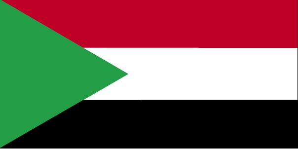
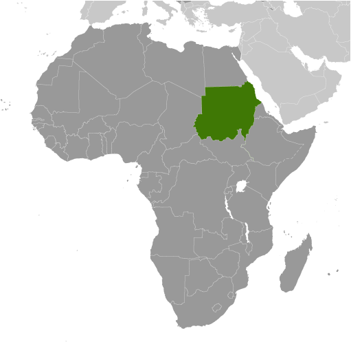
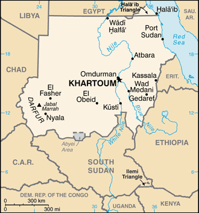

Africa :: SUDAN
Introduction :: SUDAN
-
Military regimes favoring Islamic-oriented governments have dominated national politics since independence from Anglo-Egyptian co-rule in 1956. Sudan was embroiled in two prolonged civil wars during most of the remainder of the 20th century. These conflicts were rooted in northern economic, political, and social domination of largely non-Muslim, non-Arab southern Sudanese. The first civil war ended in 1972 but another broke out in 1983. Peace talks gained momentum in 2002-04 with the signing of several accords. The final North/South Comprehensive Peace Agreement (CPA), signed in January 2005, granted the southern rebels autonomy for six years followed by a referendum on independence for Southern Sudan. The referendum was held in January 2011 and indicated overwhelming support for independence. South Sudan became independent on 9 July 2011. Sudan and South Sudan have yet to fully implement security and economic agreements signed in September 2012 relating to the normalization of relations between the two countries. The final disposition of the contested Abyei region has also to be decided.Following South Sudan's independence, conflict broke out between the government and the Sudan People's Liberation Movement-North in Southern Kordofan and Blue Nile states (together known as the Two Areas), and has resulted in 1.1 million internally displaced persons or severely affected persons needing humanitarian assistance. A separate conflict broke out in the western region of Darfur in 2003, displacing nearly 2 million people and causing thousands of deaths. Fighting in both the Two Areas and Darfur between government forces and opposition has largely subsided, however the civilian populations are affected by low-level violence including inter-tribal conflict and banditry, largely a result of weak rule of law. The UN and the African Union have jointly commanded a Darfur peacekeeping operation (UNAMID) since 2007. Peacekeeping troops have struggled to address insecurity in Darfur and have increasingly become targets for attacks by armed groups. Sudan also has faced refugee influxes from neighboring countries, primarily Ethiopia, Eritrea, Chad, Central African Republic, and South Sudan. Armed conflict, poor transport infrastructure, and denial of access by both the government and armed opposition have impeded the provision of humanitarian assistance to affected populations.
Geography :: SUDAN
-
north-eastern Africa, bordering the Red Sea, between Egypt and Eritrea15 00 N, 30 00 EAfricatotal: 1,861,484 sq kmland: NAwater: NAcountry comparison to the world: 17slightly less than one-fifth the size of the UStotal: 6,819 kmborder countries (7): Central African Republic 174 km, Chad 1,403 km, Egypt 1,276 km, Eritrea 682 km, Ethiopia 744 km, Libya 382 km, South Sudan 2,158 kmnote: Sudan-South Sudan boundary represents 1 January 1956 alignment; final alignment pending negotiations and demarcation; final sovereignty status of Abyei region pending negotiations between Sudan and South Sudan853 kmterritorial sea: 12 nmcontiguous zone: 18 nmcontinental shelf: 200-m depth or to the depth of exploitationhot and dry; arid desert; rainy season varies by region (April to November)generally flat, featureless plain; desert dominates the northmean elevation: 568 melevation extremes: lowest point: Red Sea 0 mhighest point: Jabal Marrah 3,042 mpetroleum; small reserves of iron ore, copper, chromium ore, zinc, tungsten, mica, silver, gold; hydropoweragricultural land: 100%arable land 15.7%; permanent crops 0.2%; permanent pasture 84.2%forest: 0%other: 0% (2011 est.)18,900 sq km (2012)with the exception of a ribbon of settlement that corresponds to the banks of the Nile, northern Sudan, which extends into the dry Sahara, is sparsely populated; more abundant vegetation and broader access to water increases population distribution in the south extending habitable range along nearly the entire border with South Sudan; sizeable areas of population are found around Khartoum, southeast between the Blue and White Nile Rivers, and throughout South Darfurdust storms and periodic persistent droughtsinadequate supplies of potable water; wildlife populations threatened by excessive hunting; soil erosion; desertification; periodic droughtparty to: Biodiversity, Climate Change, Climate Change-Kyoto Protocol, Desertification, Endangered Species, Hazardous Wastes, Law of the Sea, Ozone Layer Protection, Wetlandssigned, but not ratified: none of the selected agreementsthe Nile is Sudan's primary water source; its major tributaries, the White Nile and the Blue Nile, meet at Khartoum to form the River Nile which flows northward through Egypt to the Mediterranean Sea
People and Society :: SUDAN
-
37,345,935 (July 2017 est.)country comparison to the world: 37noun: Sudanese (singular and plural)adjective: SudaneseSudanese Arab (approximately 70%), Fur, Beja, Nuba, FallataArabic (official), English (official), Nubian, Ta Bedawie, FurSunni Muslim, small Christian minority0-14 years: 38.68% (male 7,335,613/female 7,111,552)15-24 years: 21.04% (male 4,033,787/female 3,823,098)25-54 years: 32.77% (male 5,943,906/female 6,293,921)55-64 years: 4.24% (male 824,577/female 760,014)65 years and over: 3.27% (male 655,795/female 563,672) (2017 est.)total dependency ratio: 81.6youth dependency ratio: 75.4elderly dependency ratio: 6.3potential support ratio: 15.9 (2015 est.)total: 19.9 yearsmale: 19.7 yearsfemale: 20.1 years (2017 est.)country comparison to the world: 1971.64% (2017 est.)country comparison to the world: 7227.9 births/1,000 population (2017 est.)country comparison to the world: 447.3 deaths/1,000 population (2017 est.)country comparison to the world: 122-4.1 migrant(s)/1,000 population (2017 est.)country comparison to the world: 184with the exception of a ribbon of settlement that corresponds to the banks of the Nile, northern Sudan, which extends into the dry Sahara, is sparsely populated; more abundant vegetation and broader access to water increases population distribution in the south extending habitable range along nearly the entire border with South Sudan; sizeable areas of population are found around Khartoum, southeast between the Blue and White Nile Rivers, and througout South Darfururban population: 34.2% of total population (2017)rate of urbanization: 3.02% annual rate of change (2015-20 est.)KHARTOUM (capital) 5.129 million (2015)at birth: 1.05 male(s)/female0-14 years: 1.03 male(s)/female15-24 years: 1.06 male(s)/female25-54 years: 0.94 male(s)/female55-64 years: 1.1 male(s)/female65 years and over: 1.19 male(s)/femaletotal population: 1.02 male(s)/female (2016 est.)311 deaths/100,000 live births (2015 est.)country comparison to the world: 41total: 48.8 deaths/1,000 live birthsmale: 54 deaths/1,000 live birthsfemale: 43.4 deaths/1,000 live births (2017 est.)country comparison to the world: 33total population: 64.4 yearsmale: 62.3 yearsfemale: 66.7 years (2017 est.)country comparison to the world: 1853.57 children born/woman (2017 est.)country comparison to the world: 4212.2% (2014)8.4% of GDP (2014)country comparison to the world: 483.06 physicians/1,000 population (2014)0.8 beds/1,000 population (2012)improved:urban: 66% of populationrural: 50.2% of populationtotal: 55.5% of populationunimproved:urban: 34% of populationrural: 49.8% of populationtotal: 44.5% of population (2012 est.)improved:urban: 43.9% of populationrural: 13.4% of populationtotal: 23.6% of populationunimproved:urban: 56.1% of populationrural: 86.6% of populationtotal: 76.4% of population (2012 est.)0.2% (2016 est.)country comparison to the world: 9756,000 (2016 est.)country comparison to the world: 553,000 (2016 est.)country comparison to the world: 41degree of risk: very highfood or waterborne diseases: bacterial and protozoal diarrhea, hepatitis A and E, and typhoid fevervectorborne diseases: malaria, dengue fever, and Rift Valley feverwater contact disease: schistosomiasisrespiratory disease: meningococcal meningitisanimal contact disease: rabies (2016)6.6% (2014)country comparison to the world: 16533% (2014)country comparison to the world: 212.2% of GDP (2009)definition: age 15 and over can read and writetotal population: 75.9%male: 83.3%female: 68.6% (2015 est.)total: 7 yearsmale: 7 yearsfemale: 7 years (2013)total: 20%male: 16%female: 32% (2009 est.)
Government :: SUDAN
-
conventional long form: Republic of the Sudanconventional short form: Sudanlocal long form: Jumhuriyat as-Sudanlocal short form: As-Sudanformer: Anglo-Egyptian Sudanetymology: the name "Sudan" derives from the Arabic "bilad-as-sudan" meaning "Land of the Black [peoples]"presidential republicname: Khartoumgeographic coordinates: 15 36 N, 32 32 Etime difference: UTC+3 (8 hours ahead of Washington, DC, during Standard Time)18 states (wilayat, singular - wilayah); Blue Nile, Central Darfur, East Darfur, Gedaref, Gezira, Kassala, Khartoum, North Darfur, North Kordofan, Northern, Red Sea, River Nile, Sennar, South Darfur, South Kordofan, West Darfur, West Kordofan, White Nile1 January 1956 (from Egypt and the UK)Independence Day, 1 January (1956)history: previous 1998; latest adopted 6 July 2005, effective 9 July 2005 (interim constitution)amendments: proposed by the National Legislature or by the president of the republic; passage requires submission of the proposal to the Legislature at least two months prior to consideration, approval by at least three-quarters majority vote in both houses of the Legislature, and assent by the president; amended 2015 (2017)mixed legal system of Islamic law and English common lawaccepts compulsory ICJ jurisdiction with reservations; withdrew acceptance of ICCt jurisdiction in 2008citizenship by birth: nocitizenship by descent only: the father must be a citizen of Sudandual citizenship recognized: noresidency requirement for naturalization: 10 years17 years of age; universalchief of state: President Umar Hassan Ahmad al-BASHIR (since 16 October 1993); First Vice President BAKRI Hassan Salih (since 3 December 2013) and prime minister (since 2 March 2017); Second Vice President Hasabu Mohamed ABDEL RAHMIN (since 3 December 2013); note - the president is both chief of state and head of governmenthead of government: President Umar Hassan Ahmad al-BASHIR (since 16 October 1993); First Vice President BAKRI Hassan Salih (since 3 December 2013) and prime minister (since 2 March 2017); Second Vice President Hasabu Mohamed ABDEL RAHMIN (since 3 December 2013)cabinet: Council of Ministers appointed by the president; note - the NCP dominates al-BASHIR's cabinetelections/appointments: president directly elected by absolute majority popular vote in 2 rounds if needed; last held on 13-16 April 2015 (next to be held in 2020); prime minister appointed by the president; note - the position of prime minister was reinstated in December 2016 as a result of the 2015-16 national dialogue process, and President al-BASHIR appointed BAKRI Hassan Salih to the position on 2 March 2017election results: Umar Hassan Ahmad al-BASHIR reelected president; percent of vote - Umar Hassan Ahmad al-BASHIR (NCP) 94.1%, other (15 candidates) 5.9%description: bicameral National Legislature consists of the Council of States or Majlis al-Wilayat (50 seats; members indirectly elected - 2 each by the 25 state legislatures to serve 6-year terms) and the National Assembly or Majlis Watani (426 seats; 213 members directly elected in single-seat constituencies by simple majority vote, 128 for women only directly elected by proportional representation vote, and 85 directly elected by proportional representation vote; members serve 6-year terms)elections: last held on 13-15 April 2015 (next to be held in 2021)election results: National Assembly - percent of vote by party - NA; seats by party - NCP 323, DUP 25, Democratic Unionist Party 15, other 44, independent 19highest court(s): National Supreme Court (consists of 70 judges organized into panels of 3 judges and includes 4 circuits that operate outside the capital); Constitutional Court (consists of 9 justices including the court president); note - the Constitutional Court resides outside the national judiciaryjudge selection and term of office: National Supreme Court and Constitutional Court judges appointed by the president of the republic upon the recommendation of the National Judicial Service Commission, an independent body chaired by the chief justice of the republic and members including other judges and judicial and legal officials; Supreme Court judge tenure NA; Constitutional Court judges appointed for 7 yearssubordinate courts: Court of Appeal; other national courts; public courts; district, town, and rural courtsDemocratic Unionist Party or DUP [Jalal al-DIGAIR]Democratic Unionist Party [Muhammad Uthman al-MIRGHANI]Federal Umma Party [Dr. Ahmed Babikir NAHAR]Muslim Brotherhood or MBNational Congress Party or NCP [Umar Hassan al-BASHIR]National Umma Party or NUP [Saddiq al-MAHDI]Popular Congress Party or PCP [Hassan al-TURABI]Reform Movement Now [Dr. Ghazi Salahuddin al-ATABANI]Sudan National Front [Ali Mahmud HASANAYN]Sudanese Communist Party or SCP [Mohammed Moktar Al-KHATEEB]Sudanese Congress Party or SCoP [Ibrahim Al-SHEIKH]Umma Party for Reform and DevelopmentUnionist Movement Party or UMPDarfur rebel groups including the Justice and Equality Movement or JEM [Gibril Fidail IBRAHIM], Sudan Liberation Movement or SLM-AW [Abdel Wahid al-NUR, various factional leaders], Sudan Liberation Movement or SLM-MM [Minni Arkou MINAWI]National Consensus Front or NCF [Farouq ABU ISSA]Sudan People's Liberation Movement-North or SPLM-N [Yasir ARMAN]ABEDA, ACP, AfDB, AFESD, AMF, AU, CAEU, COMESA, FAO, G-77, IAEA, IBRD, ICAO, ICC (NGOs), ICRM, IDA, IDB, IFAD, IFC, IFRCS, IGAD, ILO, IMF, IMO, Interpol, IOC, IOM, IPU, ISO, ITSO, ITU, LAS, MIGA, NAM, OIC, OPCW, PCA, UN, UNCTAD, UNESCO, UNHCR, UNIDO, UNWTO, UPU, WCO, WFTU (NGOs), WHO, WIPO, WMO, WTO (observer)chief of mission: Ambassador (vacant); Charge d'Affaires MAOWIA Osman Khalid Mohammed (since 31 January 2014)chancery: 2210 Massachusetts Avenue NW, Washington, DC 20008telephone: [1] (202) 338-8565FAX: [1] (202) 667-2406chief of mission: Ambassador (vacant); Charge d'Affaires Steven KOUTSIS (since July 2016)embassy: Sharia Ali Abdul Latif Street, Khartoummailing address: P.O. Box 699, Kilo 10, Soba, Khartoum; APO AE 09829telephone: [249] (187)-0-(22000)FAX: [249] (183) 774-137three equal horizontal bands of red (top), white, and black with a green isosceles triangle based on the hoist side; colors and design based on the Arab Revolt flag of World War I, but the meanings of the colors are expressed as follows: red signifies the struggle for freedom, white is the color of peace, light, and love, black represents the people of Sudan (in Arabic 'Sudan' means black), green is the color of Islam, agriculture, and prosperitysecretary bird; national colors: red, white, black, greenname: "Nahnu Djundulla Djundulwatan" (We Are the Army of God and of Our Land)lyrics/music: Sayed Ahmad Muhammad SALIH/Ahmad MURJANnote: adopted 1956; originally served as the anthem of the Sudanese military
Economy :: SUDAN
-
Sudan has experienced protracted social conflict, civil war, and, in July 2011, the loss of three-quarters of its oil production due to the secession of South Sudan. The oil sector had driven much of Sudan's GDP growth since 1999. For nearly a decade, the economy boomed on the back of rising oil production, high oil prices, and significant inflows of foreign direct investment. Since the economic shock of South Sudan's secession, Sudan has struggled to stabilize its economy and make up for the loss of foreign exchange earnings. The interruption of oil production in South Sudan in 2012 for over a year and the consequent loss of oil transit fees further exacerbated the fragile state of Sudan’s economy. Ongoing conflicts in Southern Kordofan, Darfur, and the Blue Nile states, lack of basic infrastructure in large areas, and reliance by much of the population on subsistence agriculture, keep close to half of the population at or below the poverty line.Sudan is also subject to comprehensive US sanctions. Sudan is attempting to develop non-oil sources of revenues, such as gold mining, while carrying out an austerity program to reduce expenditures. The world’s largest exporter of gum Arabic, Sudan produces 75-80% of the world’s total output. Agriculture continues to employ 80% of the work force.Sudan introduced a new currency, still called the Sudanese pound, following South Sudan's secession, but the value of the currency has fallen since its introduction. Khartoum formally devalued the currency in June 2012, when it passed austerity measures that included gradually repealing fuel subsidies. Sudan also faces high inflation, which reached 47% on an annual basis in November 2012 but subsided to about 20% in 2016-17.$177 billion (2016 est.)$169.6 billion (2015 est.)$160 billion (2014 est.)note: data are in 2016 dollarscountry comparison to the world: 70$91.24 billion (2016 est.)3.1% (2016 est.)4.9% (2015 est.)1.6% (2014 est.)country comparison to the world: 92$4,500 (2016 est.)$4,500 (2015 est.)$4,400 (2014 est.)note: data are in 2016 dollarscountry comparison to the world: 17311.5% of GDP (2016 est.)9.1% of GDP (2015 est.)9.9% of GDP (2014 est.)country comparison to the world: 97household consumption: 77.1%government consumption: 5.9%investment in fixed capital: 18.7%investment in inventories: 0.9%exports of goods and services: 9.8%imports of goods and services: -12.5% (2016 est.)agriculture: 39.5%industry: 2.6%services: 57.9% (2016 est.)cotton, groundnuts (peanuts), sorghum, millet, wheat, gum Arabic, sugarcane, cassava (manioc, tapioca), mangoes, papaya, bananas, sweet potatoes, sesame seeds; animal feed, sheep and other livestockoil, cotton ginning, textiles, cement, edible oils, sugar, soap distilling, shoes, petroleum refining, pharmaceuticals, armaments, automobile/light truck assembly, milling5.5% (2016 est.)country comparison to the world: 4211.92 million (2007 est.)country comparison to the world: 50agriculture: 80%industry: 7%services: 13% (1998 est.)20.6% (2016 est.)14.8% (2013 est.)country comparison to the world: 16246.5% (2009 est.)lowest 10%: 2.7%highest 10%: 26.7% (2009 est.)revenues: $7.134 billionexpenditures: $11.62 billion (2016 est.)7.6% of GDP (2016 est.)country comparison to the world: 216-4.7% of GDP (2016 est.)country comparison to the world: 15465.4% of GDP (2016 est.)59.5% of GDP (2015 est.)country comparison to the world: 59calendar year17.8% (2016 est.)16.9% (2015 est.)country comparison to the world: 217$12.51 billion (31 December 2016 est.)$9.514 billion (31 December 2015 est.)country comparison to the world: 77$19.53 billion (31 December 2016 est.)$15.43 billion (31 December 2015 est.)country comparison to the world: 89$21.61 billion (31 December 2016 est.)$17.35 billion (31 December 2015 est.)country comparison to the world: 85$NA$-5.126 billion (2016 est.)$-5.461 billion (2015 est.)country comparison to the world: 170$3.094 billion (2016 est.)$3.169 billion (2015 est.)country comparison to the world: 121gold; oil and petroleum products; cotton, sesame, livestock, peanuts, gum Arabic, sugarUAE 42.9%, Saudi Arabia 19.5%, Egypt 15.9% (2016)$7.325 billion (2016 est.)$8.368 billion (2015 est.)country comparison to the world: 107foodstuffs, manufactured goods, refinery and transport equipment, medicines, chemicals, textiles, wheatUAE 15.4%, India 11.2%, Egypt 10.4%, Saudi Arabia 9.2%, Turkey 8.9%, Japan 5% (2016)$168.3 million (31 December 2016 est.)$173.5 million (31 December 2015 est.)country comparison to the world: 161$51.26 billion (31 December 2016 est.)$49.42 billion (31 December 2015 est.)country comparison to the world: 63$25.47 billion (31 December 2016 est.)$24.4 billion (31 December 2015 est.)country comparison to the world: 73Sudanese pounds (SDG) per US dollar -6.14 (2016 est.)6.14 (2015 est.)6.03 (2014 est.)5.74 (2013 est.)3.57 (2012 est.)
Energy :: SUDAN
-
population without electricity: 24,700,000electrification - total population: 35%electrification - urban areas: 63%electrification - rural areas: 21% (2013)12.69 billion kWh (2015 est.)country comparison to the world: 9110.26 billion kWh (2015 est.)country comparison to the world: 930 kWh (2016 est.)country comparison to the world: 2000 kWh (2016 est.)country comparison to the world: 2043.736 million kW (2015 est.)country comparison to the world: 9234.4% of total installed capacity (2015 est.)country comparison to the world: 1800% of total installed capacity (2015 est.)country comparison to the world: 18560.2% of total installed capacity (2015 est.)country comparison to the world: 285.4% of total installed capacity (2015 est.)country comparison to the world: 94104,900 bbl/day (2016 est.)country comparison to the world: 43152,100 bbl/day (2014 est.)country comparison to the world: 340 bbl/day (2014 est.)country comparison to the world: 1925 billion bbl (1 January 2017 es)country comparison to the world: 2489,300 bbl/day (2014 est.)country comparison to the world: 70110,000 bbl/day (2015 est.)country comparison to the world: 787,396 bbl/day (2014 est.)country comparison to the world: 8823,920 bbl/day (2014 est.)country comparison to the world: 1100 cu m (2013 est.)country comparison to the world: 1970 cu m (2013 est.)country comparison to the world: 1330 cu m (2013 est.)country comparison to the world: 1850 cu m (2013 est.)country comparison to the world: 19084.95 billion cu m (1 January 2017 es)country comparison to the world: 5714 million Mt (2013 est.)country comparison to the world: 93
Communications :: SUDAN
-
total subscriptions: 136,472subscriptions per 100 inhabitants: less than 1 (July 2016 est.)country comparison to the world: 102total: 27,807,293subscriptions per 100 inhabitants: 76 (July 2016 est.)country comparison to the world: 46general assessment: well-equipped system by regional standards and being upgraded; cellular communications started in 1996 and have expanded substantially with wide coverage of most major citiesdomestic: consists of microwave radio relay, cable, fiber optic, radiotelephone communications, tropospheric scatter, and a domestic satellite system with 14 earth stations; teledensity exceeeds 75 telephones per 100 personsinternational: country code - 249; linked to the EASSy and FLAG fiber-optic submarine cable systems; satellite earth stations - 1 Intelsat (Atlantic Ocean), 1 Arabsat (2016)the Sudanese Government directly controls TV and radio, requiring that both media reflect government policies; TV has a permanent military censor; a private radio station is in operation (2007).sdtotal: 10,284,260percent of population: 28.0% (July 2016 est.)country comparison to the world: 48
Transportation :: SUDAN
-
number of registered air carriers: 6inventory of registered aircraft operated by air carriers: 25annual passenger traffic on registered air carriers: 496,178annual freight traffic on registered air carriers: 13,161,592 mt-km (2015)ST (2016)74 (2013)country comparison to the world: 71total: 16over 3,047 m: 22,438 to 3,047 m: 101,524 to 2,437 m: 2under 914 m: 2 (2013)total: 582,438 to 3,047 m: 11,524 to 2,437 m: 17914 to 1,523 m: 28under 914 m: 12 (2013)6 (2013)gas 156 km; oil 4,070 km; refined products 1,613 km (2013)total: 7,251 kmnarrow gauge: 5,851 km 1.067-m gauge; 1,400 km 0.600-m gauge for cotton plantations (20014)country comparison to the world: 31total: 11,900 kmpaved: 4,320 kmunpaved: 7,580 km (2000)country comparison to the world: 1294,068 km (1,723 km open year-round on White and Blue Nile Rivers) (2011)country comparison to the world: 24total: 2by type: cargo 2 (2010)country comparison to the world: 144major seaport(s): Port Sudan
Military and Security :: SUDAN
-
Sudanese Armed Forces (SAF): Land Forces, Navy (includes Marines), Sudanese Air Force (Sikakh al-Jawwiya as-Sudaniya), Rapid Support Forces, Popular Defense Forces (2016)18-33 years of age for male and female compulsory or voluntary military service; 1-2 year service obligation; a requirement that completion of national service was mandatory before entering public or private sector employment has been cancelled (2012)
Transnational Issues :: SUDAN
-
the effects of Sudan's ethnic and rebel militia fighting since the mid-20th century have penetrated all of the neighboring states; Chad wishes to be a helpful mediator in resolving the Darfur conflict, and in 2010 established a joint border monitoring force with Sudan, which has helped to reduce cross-border banditry and violence; as of April 2017, more than 610,000 Sudanese refugees are being hosted in the Central African Republic, Chad, Egypt, Ethiopia, Kenya, and South Sudan; Sudan, in turn, is hosting about 507,000 refugees, including more than 375,000 from South Sudan; Sudan accuses South Sudan of supporting Sudanese rebel groups; Sudan claims but Egypt de facto administers security and economic development of the Halaib region north of the 22nd parallel boundary; periodic violent skirmishes with Sudanese residents over water and grazing rights persist among related pastoral populations along the border with the Central African Republic; South Sudan-Sudan boundary represents 1 January 1956 alignment, final alignment pending negotiations and demarcation; final sovereignty status of Abyei Area pending negotiations between South Sudan and Sudanrefugees (country of origin): 103,176 (Eritrea); 8,502 (Chad); 6,997 (Syria) (2016); 454,660 (South Sudan) (refugees and asylum seekers) (2017)IDPs: 3.3 million (civil war 1983-2005; ongoing conflict in Darfur region; government and rebel fighting along South Sudan border; inter-tribal clashes) (2016)current situation: Sudan is a source, transit, and destination country for men, women, and children who are subjected to forced labor and sex trafficking; Sudanese women and girls, particularly those from rural areas or who are internally displaced, or refugees are vulnerable to domestic servitude in country, as well as domestic servitude and sex trafficking abroad; migrants from East and West Africa, South Sudan, Syria, and Nigeria smuggled into or through Sudan are vulnerable to exploitation; Ethiopian, Eritrean, and Filipina women are subjected to domestic servitude in Sudanese homes, and East African and possibly Thai women are forced into prostitution in Sudan; Sudanese children continue to be recruited and used as combatants by government forces and armed groupstier rating: Tier 2 Watch List - Sudan does not fully comply with the minimum standards for the elimination of trafficking; however, it is making significant efforts to do so; the government increased its efforts to publically address and prevent trafficking, established a national anti-trafficking council, and began drafting a national action plan against trafficking; the government acknowledges cross-border trafficking but still denies the existence of forced labor, sex trafficking, and the recruitment of child soldiers domestically; law enforcement and judicial officials struggled to apply the national anti-trafficking law, often relying on other statutes with lesser penalties; authorities did not use systematic procedure to identify victims or refer them to care and relied on international organizations and domestic groups to provide protective services; some foreign victims were penalized for unlawful acts committed as a direct result of being trafficked, such as immigration or prostitution violations (2015)